Case Study
Impact at PeopleZep: How We Reduced Hiring-to-Skilling Friction?
Hiring and upskilling worked in silos — slowing talent growth and hiring efficiency.
Crafting thoughtful experiences...
Every product is a system of decisions — not just visuals.
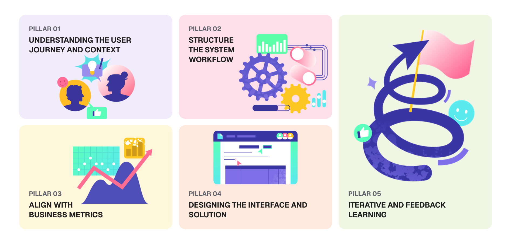
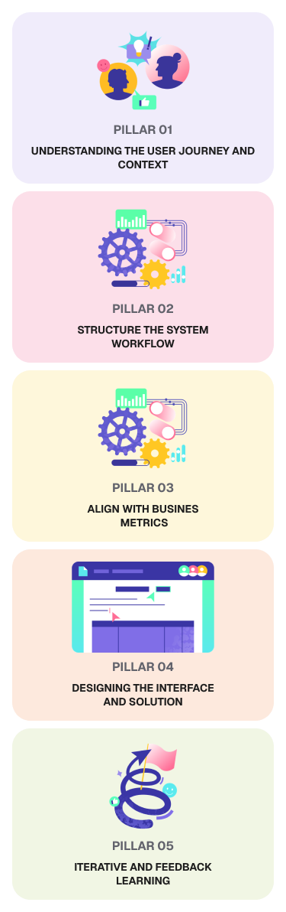
View curated case studies.
Case Study
Hiring and upskilling worked in silos — slowing talent growth and hiring efficiency.
Case Study
Users stopped engaging once the trip ended, hurting retention and repeat bookings.
Case Study
Recruiters struggled to filter massive resume volumes without cognitive overload.
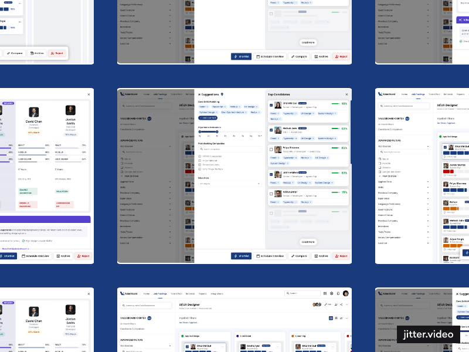
Personal Project
Group trip planning became messy due to scattered decisions and poor coordination.
Freelance
Delivered a clear and responsive interface for real-time room condition tracking.
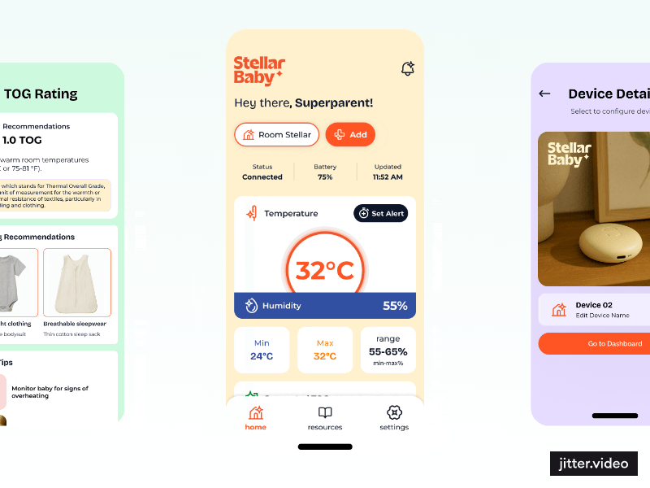
Design System
Creating a unified design system to ensure consistency, improve collaboration, and accelerate product development.
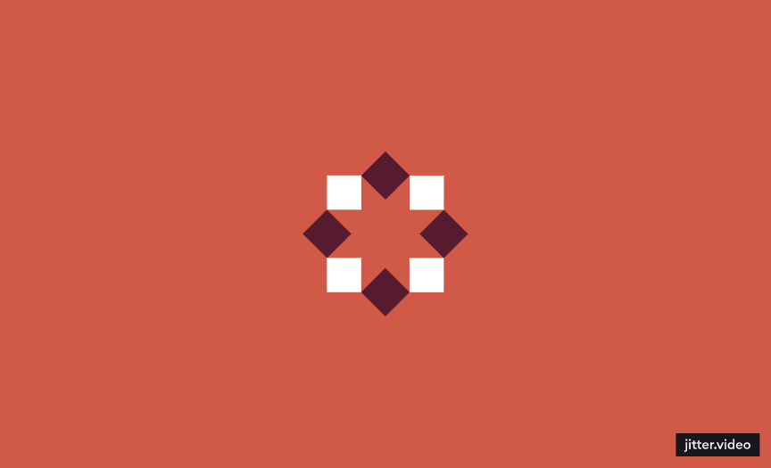
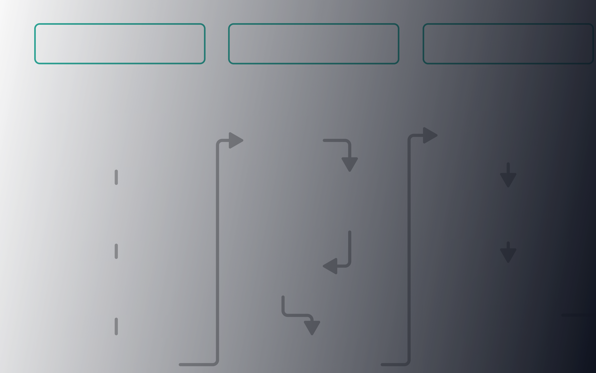
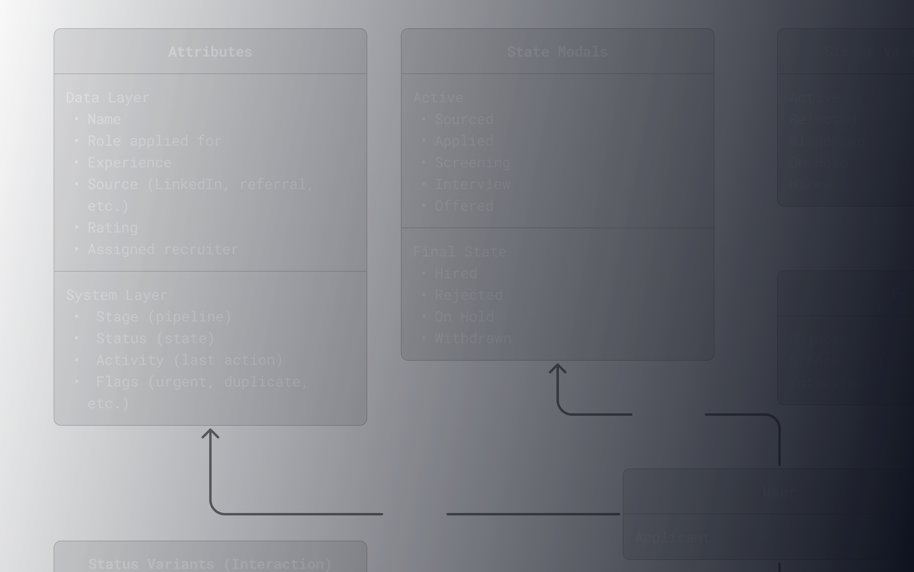
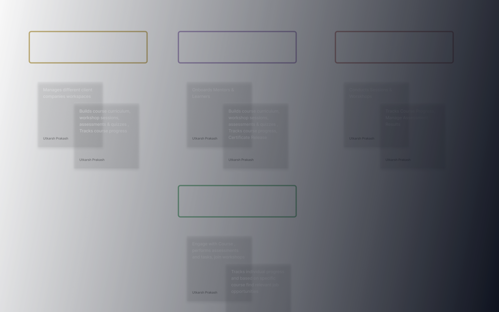
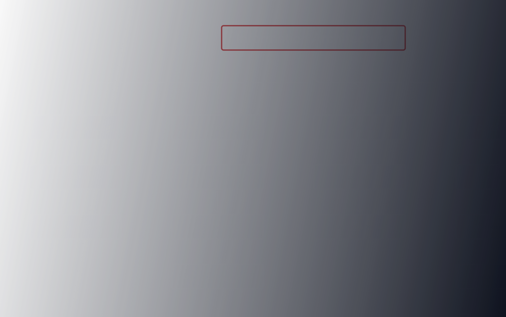
About me and Past Experiences.

I specialize in simplifying complex workflows, building scalable design systems, and collaborating closely with product, engineering, and business teams to deliver high-impact solutions. Strong experience in Figma workflows, component systems, and design automation to improve design efficiency and consistency.
Self-taught, curious, and continuously learning — fueled by caffeine and a strong passion for product thinking and craft.
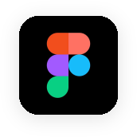
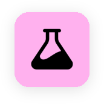
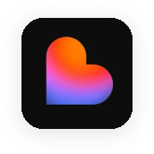
I lead end-to-end design for enterprise ERP, CRM, and distribution ecosystems. Partnering with stakeholders, I define UX strategies and scalable systems for manufacturing clients, optimizing retail journeys through a unified design system.
I redesigned placement-driven EdTech experiences, co-creating an integrated LMS and ATS. By optimizing conversion funnels and leading enterprise pilot deployments, I transitioned the platform into a successful SaaS ecosystem driving employment.
I've always believed that great design doesn't come from screens — it comes from paying attention to the world around you. The way a cafe is lit. The composition of a meal before you eat it. The feeling of standing at a riverbank and watching everything move at once. These aren't hobbies. They're my reference library. Every aesthetic choice I make in design is informed by something I noticed outside of it.
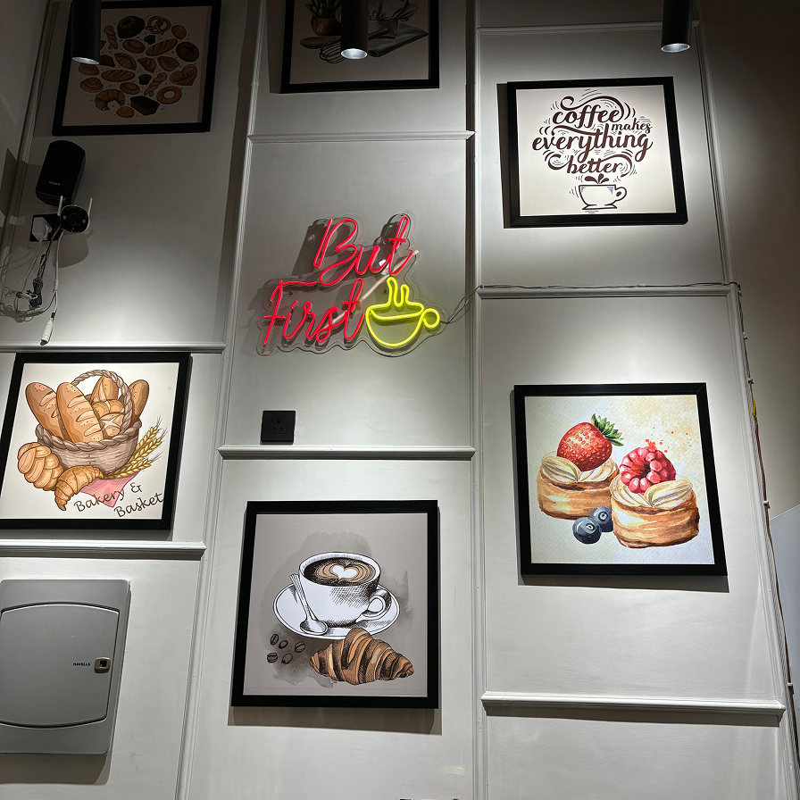
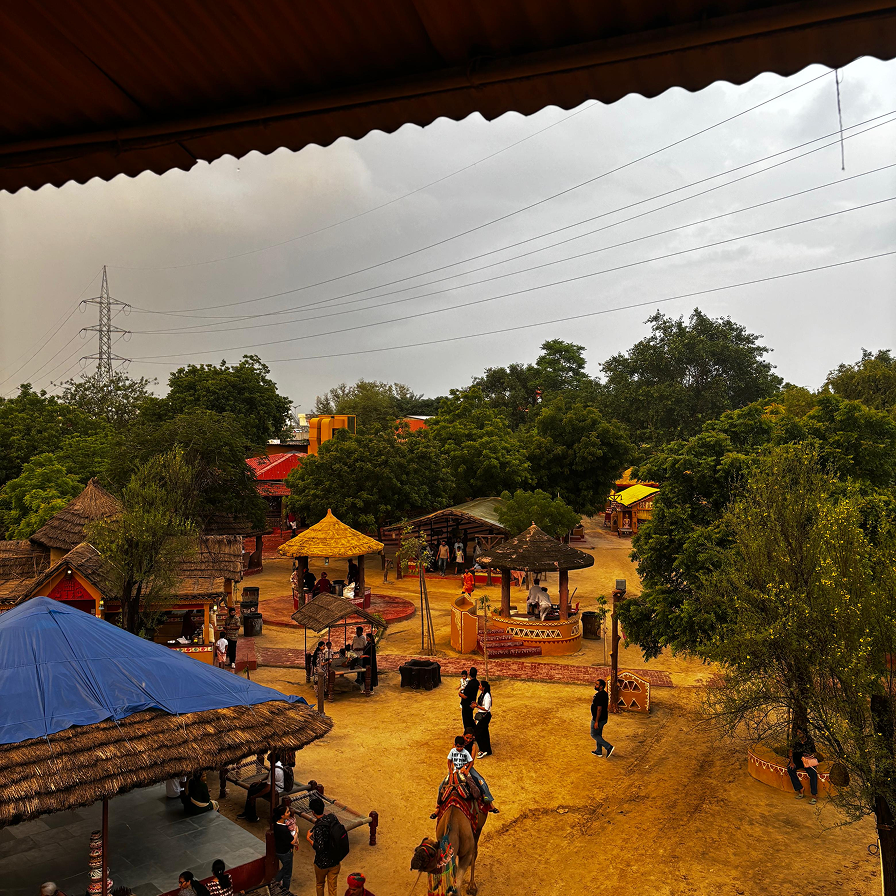
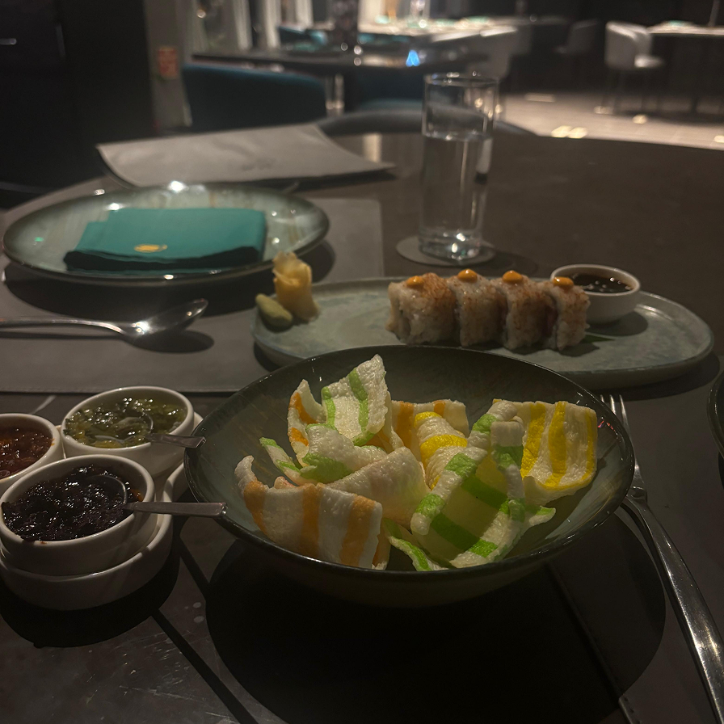
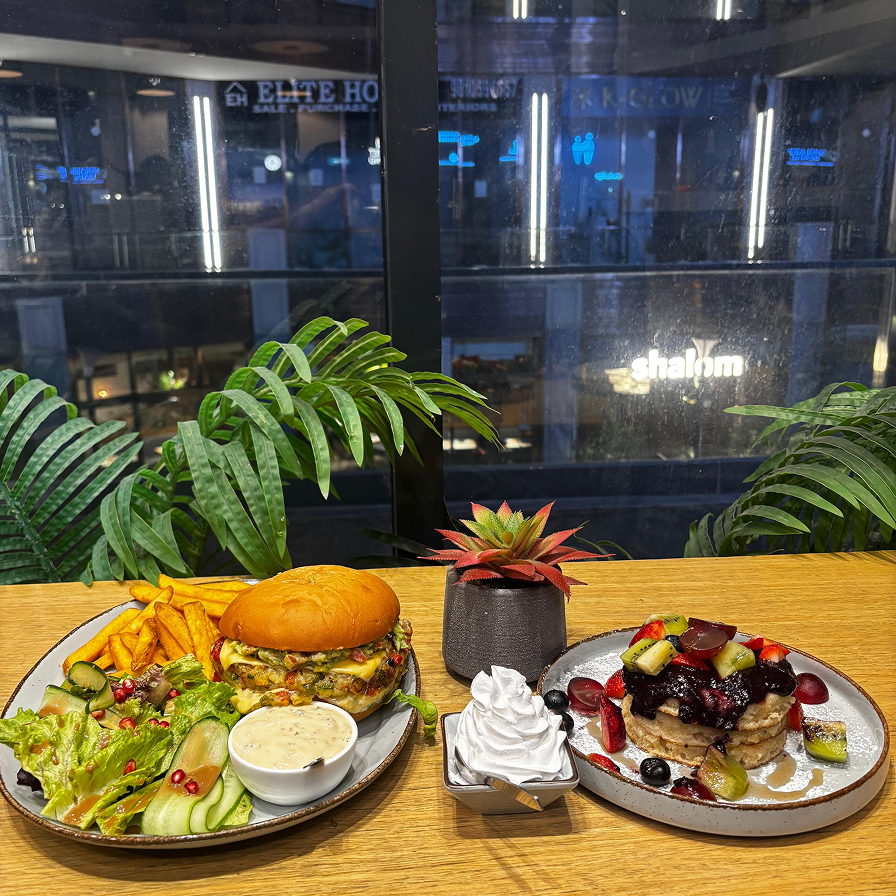